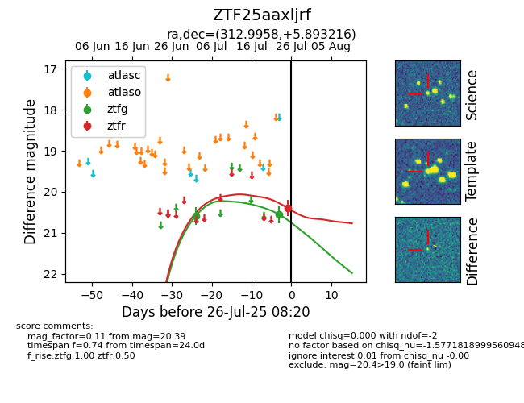

Target ZTF25aaxljrf at 2025-07-26 08:20, see:
FINK: fink-portal.org/ZTF25aaxljrf
Lasair: lasair-ztf.lsst.ac.uk/objects/ZTF25aaxljrf
ALeRCE: alerce.online/object/ZTF25aaxljrf
alt names
ZTF25aaxljrf (ztf,fink)
coordinates:
equatorial (ra, dec) = (312.9958,+5.89322)
galactic (l, b) = (53.2834,-23.43117)
photometry
last ztfg=20.55, ztfr=20.39
2 ztfg, 1 ztfr detections
